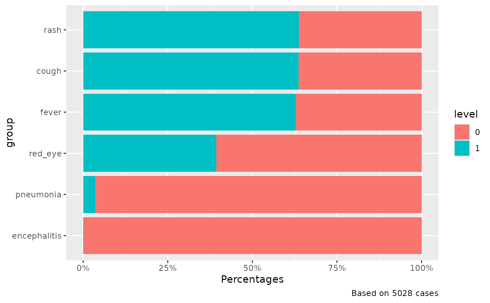

Stacked barplot
Usage
plot_stacked_bar(
df,
cols,
levels_value,
keep_na = TRUE,
use_counts = TRUE,
flip = FALSE,
x_lab = waiver(),
caption = TRUE
)Arguments
- df
un-aggregated dataframe (linelist).
- cols
vector of character/factor variables names in
dfto be displayed in the barplot.- levels_value
vector of level values to be used for the plotting.
- keep_na
logical, default =
TRUE.Keep NAs in the graphs and the proportions ?- use_counts
logical, default =
TRUE.Use counts or proportion in y axis ?- flip
logical, default =
FALSE. Flip the barplot ?- x_lab
character name for the x axis
- caption
logical, default =
TRUE.Display the plot caption summarising the number of cases ?
Examples
# Use fake data from Epidemiologist R handbook
suppressMessages(library(dplyr))
epivis::moissala_measles |>
mutate(across(
c(
fever,
rash,
cough,
red_eye,
pneumonia,
encephalitis
),
~ as.character(.x)
)) |>
plot_stacked_bar(
cols = c("fever", "rash", "cough", "red_eye", "pneumonia", "encephalitis"),
levels_value = c(0, 1),
keep_na = FALSE,
use_counts = FALSE,
flip = TRUE
)
